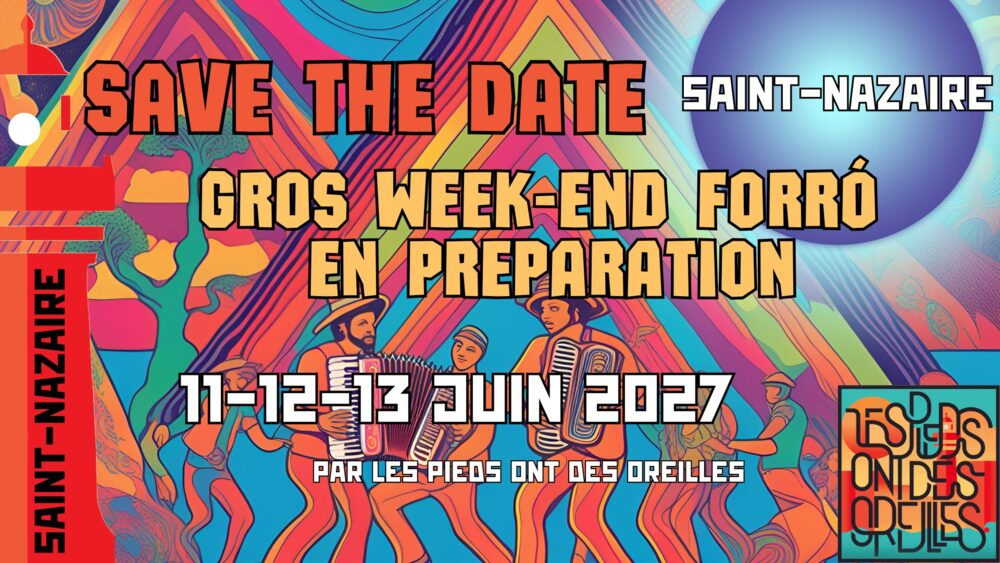
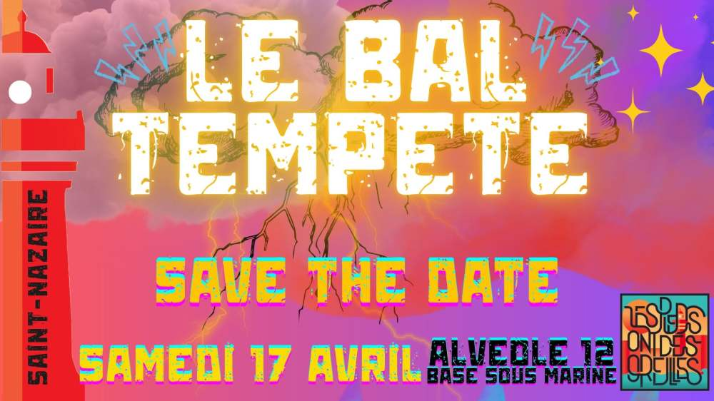
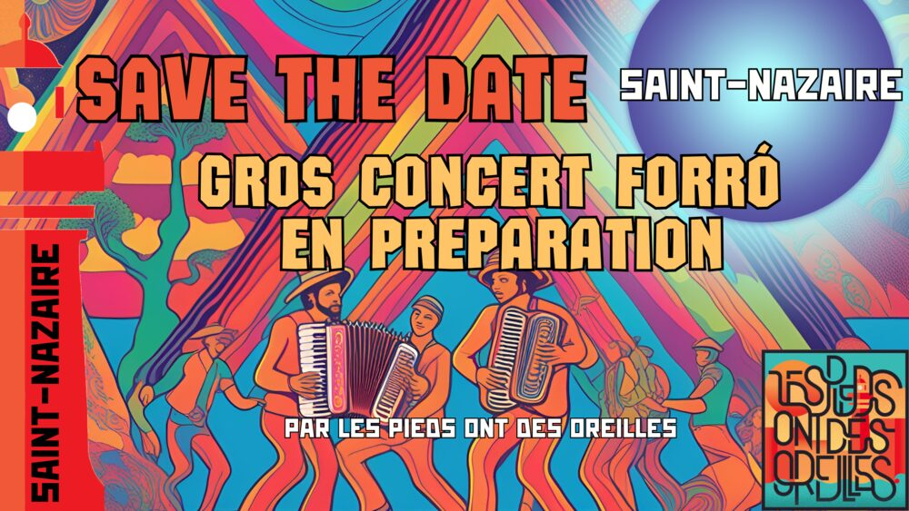
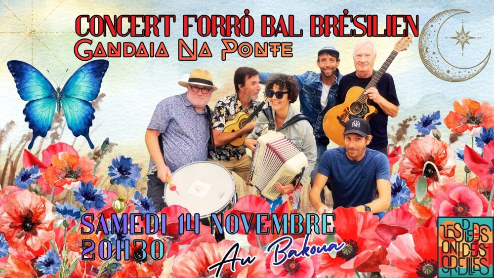
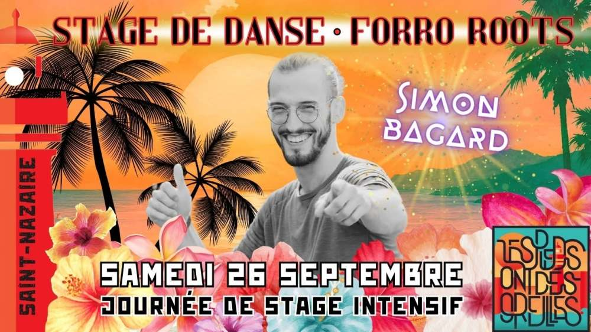
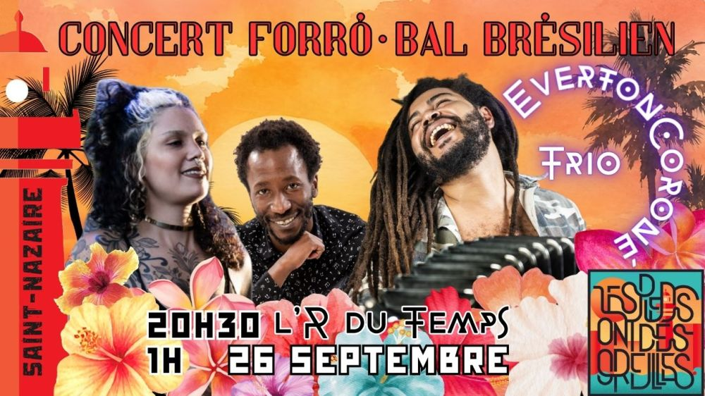

Danse forró – mardi
Niveau 1 : 19h–20h15
Niveau 2 : 20h15–21h30
École Carnot
Contact : Julien, 07 63 47 55 85
Association · Saint-Nazaire
Cours de danse, bals, stages, concerts et ateliers de percussions du Nordeste brésilien.
« Les pieds ont des oreilles » (les podos) est une association créée en septembre 2019 à Saint-Nazaire par quatre fondateurs : Alice, Julien, Jen et Jess. Elle est née au bar l'Appart, autour d'une passion commune : le forró.






▶ VidéoNiveau 1 : 19h–20h15
Niveau 2 : 20h15–21h30
École Carnot
Contact : Julien, 07 63 47 55 85
19h–20h30
École Carnot
Contact : Léo, 07 85 41 32 76
18h30–20h30
Salle de danse Gambetta
Contact : Alice, 06 60 40 15 17
18h–20h
Salle de danse Gambetta
Contact : Alice, 06 60 40 15 17
Le forró est une musique et une danse de couple originaires du Nordeste brésilien, que l'on peut comparer, en simplifiant, à une salsa brésilienne.
Traditionnellement, la musique est jouée en trio avec l'accordéon, le zabumba et le triangle, rejoints parfois par le pandeiro, la rabeca, le pifano, la ganza ou l'agogô.
Les pieds ont des oreilles
4 allée des Pluviers, 44600 Saint-Nazaire
lespiedsontdesoreilles@gmail.com
07 63 47 55 85 · 06 60 40 15 17